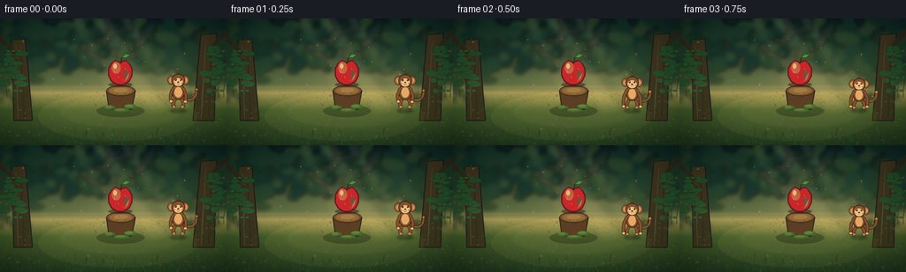
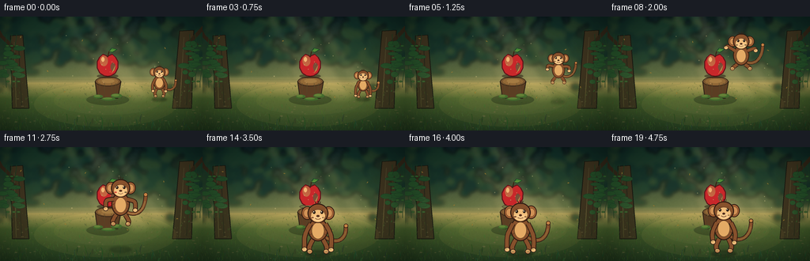
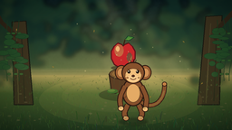
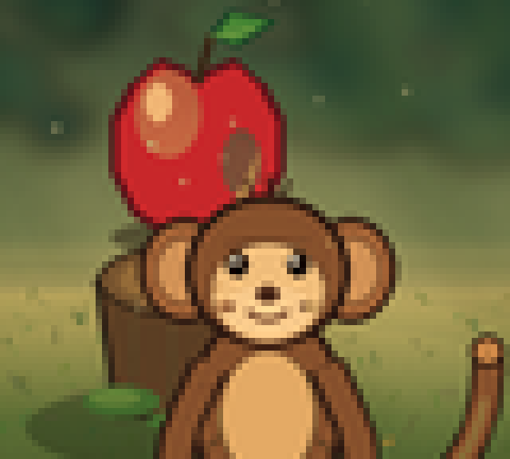

CODING AGENTS AS PIXEL WORLD MODELS
traex/DeepSeek-V4.1-Flash · dynamic_spatial_relationship_0059
点击播放 · 原生 RGB 像素
逐轮保存的候选
回放视频、检查图与代码变化。
每份候选均可单独播放。实际图片检查记录在下方工具轨迹中。
候选 01播放与检查图
点击播放 · 原生 RGB 像素


展开代码变化
--- 上一保存版本
+++ 本次保存版本
@@ -0,0 +1,658 @@
+from __future__ import annotations
+
+import math
+import random
+from pathlib import Path
+
+import numpy as np
+from PIL import Image, ImageDraw, ImageFilter
+
+import artifact_io
+
+
+ROOT = Path(__file__).resolve().parent
+W, H = 256, 144
+N, FPS = 20, 4.0
+SS = 4
+SW, SH = W * SS, H * SS
+
+INK = (37, 27, 22)
+FUR_DARK = (65, 39, 27)
+FUR = (132, 82, 47)
+FUR_MID = (156, 98, 56)
+FUR_LIGHT = (189, 128, 70)
+FACE = (232, 187, 124)
+FACE_SHADE = (203, 145, 88)
+BELLY = (220, 168, 102)
+APPLE_DARK = (93, 23, 29)
+APPLE_RED = (193, 42, 45)
+APPLE_BRIGHT = (237, 89, 57)
+APPLE_GOLD = (248, 157, 75)
+LEAF = (72, 132, 55)
+LEAF_DARK = (28, 72, 40)
+
+
+def hs(value: float) -> float:
+ return value * SS
+
+
+def pt(x: float, y: float) -> tuple[float, float]:
+ return hs(x), hs(y)
+
+
+def box(cx: float, cy: float, rx: float, ry: float) -> tuple[float, float, float, float]:
+ return hs(cx - rx), hs(cy - ry), hs(cx + rx), hs(cy + ry)
+
+
+def ellipse(draw: ImageDraw.ImageDraw, cx: float, cy: float, rx: float, ry: float,
+ fill, outline=None, width: float = 1.0):
+ draw.ellipse(box(cx, cy, rx, ry), fill=fill, outline=outline,
+ width=max(1, round(hs(width))))
+
+
+def polygon(draw: ImageDraw.ImageDraw, points, fill, outline=None, width: float = 1.0):
+ scaled = [pt(x, y) for x, y in points]
+ draw.polygon(scaled, fill=fill)
+ if outline is not None:
+ draw.line(scaled + [scaled[0]], fill=outline, width=max(1, round(hs(width))),
+ joint="curve")
+
+
+def line(draw: ImageDraw.ImageDraw, points, fill, width: float):
+ draw.line([pt(x, y) for x, y in points], fill=fill,
+ width=max(1, round(hs(width))), joint="curve")
+
+
+def blend_layer(base: Image.Image, layer: Image.Image) -> Image.Image:
+ return Image.alpha_composite(base, layer)
+
+
+def smoothstep(a: float, b: float, x: float) -> float:
+ if a == b:
+ return 1.0 if x >= b else 0.0
+ t = max(0.0, min(1.0, (x - a) / (b - a)))
+ return t * t * (3.0 - 2.0 * t)
+
+
+def lerp(a: float, b: float, t: float) -> float:
+ return a + (b - a) * t
+
+
+def make_background() -> Image.Image:
+ yy, xx = np.mgrid[0:SH, 0:SW].astype(np.float32)
+ xn = xx / (SW - 1)
+ yn = yy / (SH - 1)
+
+ top = np.array([17, 35, 38], dtype=np.float32)
+ middle = np.array([92, 108, 67], dtype=np.float32)
+ horizon = np.array([207, 178, 105], dtype=np.float32)
+ ground_near = np.array([36, 59, 34], dtype=np.float32)
+
+ rgb = np.empty((SH, SW, 3), dtype=np.float32)
+ for channel in range(3):
+ upper = np.interp(yn, [0.0, 0.52, 0.62], [top[channel], middle[channel], horizon[channel]])
+ lower = np.interp(yn, [0.54, 0.72, 1.0], [horizon[channel], [73, 98, 48][channel],
+ ground_near[channel]])
+ rgb[:, :, channel] = np.where(yn < 0.58, upper, lower)
+
+ # Warm clearing light, strongest behind the apple and fading into the canopy.
+ glow = np.exp(-(((xn - 0.55) / 0.29) ** 2 + ((yn - 0.52) / 0.25) ** 2) * 2.2)
+ glow *= 0.72
+ rgb = rgb * (1.0 - glow[:, :, None] * 0.26) + np.array([250, 214, 139]) * (glow[:, :, None] * 0.26)
+
+ # Fine natural color variation keeps the flat-shaded shapes from looking sterile.
+ rng = np.random.default_rng(28)
+ noise = rng.normal(0.0, 3.2, (SH // 4, SW // 4, 1)).astype(np.float32)
+ noise_img = Image.fromarray(np.uint8(np.clip(noise + 128, 0, 255)[:, :, 0]), "L")
+ noise_img = noise_img.resize((SW, SH), Image.Resampling.BICUBIC).filter(
+ ImageFilter.GaussianBlur(hs(0.55))
+ )
+ noise_arr = (np.asarray(noise_img, dtype=np.float32) - 128.0)[:, :, None]
+ rgb = np.clip(rgb + noise_arr * 0.32, 0, 255)
+
+ base = Image.fromarray(rgb.astype(np.uint8), "RGB").convert("RGBA")
+
+ # Distant canopy is deliberately soft, giving the crisp monkey a strong silhouette.
+ far = Image.new("RGBA", (SW, SH), (0, 0, 0, 0))
+ fd = ImageDraw.Draw(far)
+ far_colors = [(21, 50, 43, 210), (29, 62, 45, 185), (45, 74, 45, 165)]
+ rng = random.Random(13)
+ for i in range(220):
+ x = rng.uniform(-8, 264)
+ y = rng.uniform(-9, 58)
+ edge_bias = abs(x - 128) / 128
+ r = rng.uniform(2.5, 9.0) * (0.7 + edge_bias * 0.7)
+ c = far_colors[rng.randrange(len(far_colors))]
+ ellipse(fd, x, y, r * 1.25, r, c)
+ for i in range(55):
+ x = rng.choice([rng.uniform(-12, 42), rng.uniform(214, 268)])
+ y = rng.uniform(28, 92)
+ ellipse(fd, x, y, rng.uniform(4, 11), rng.uniform(2, 7),
+ (25, 57, 39, rng.randint(120, 190)))
+ far = far.filter(ImageFilter.GaussianBlur(hs(2.3)))
+ base = blend_layer(base, far)
+
+ # Midground tree trunks frame the action.
+ mid = Image.new("RGBA", (SW, SH), (0, 0, 0, 0))
+ md = ImageDraw.Draw(mid)
+
+ def trunk(cx: float, top_y: float, width: float, lean: float):
+ polygon(md, [
+ (cx - width * 0.55, top_y),
+ (cx + width * 0.55, top_y - 1),
+ (cx + width * 0.75 + lean, 116),
+ (cx - width * 0.75 + lean, 116),
+ ], (65, 56, 36, 255), (30, 31, 23, 255), 1.1)
+ line(md, [(cx - width * 0.22, top_y + 8), (cx - width * 0.30 + lean * 0.7, 114)],
+ (91, 76, 47, 190), 1.0)
+ line(md, [(cx + width * 0.18, top_y + 15), (cx + width * 0.22 + lean * 0.6, 112)],
+ (42, 39, 28, 210), 1.1)
+
+ trunk(21, 24, 14, 5)
+ trunk(236, 18, 16, -6)
+ line(md, [(18, 40), (2, 25), (-5, 12)], (54, 45, 30, 255), 4.5)
+ line(md, [(238, 34), (253, 18), (261, 9)], (54, 45, 30, 255), 4.8)
+ line(md, [(20, 48), (8, 41)], (54, 45, 30, 255), 3.2)
+ line(md, [(236, 43), (250, 34)], (54, 45, 30, 255), 3.4)
+
+ # Vines and hanging leaves soften the framing trunks.
+ for side_x, direction in [(11, 1), (247, -1)]:
+ for offset in (-5, 2, 8):
+ points = []
+ for k in range(10):
+ y = 22 + k * 7.5
+ x = side_x + offset + direction * math.sin(k * 0.72 + offset) * 2.2
+ points.append((x, y))
+ line(md, points, (35, 69, 40, 210), 0.8)
+ for k in range(2, 9, 2):
+ x, y = points[k]
+ ellipse(md, x + direction * 2.5, y, 2.2, 1.1,
+ (58, 101, 48, 210), (27, 61, 36, 220), 0.35)
+
+ # Midground leaf fans.
+ for i in range(38):
+ side = -1 if i % 2 == 0 else 1
+ x = 20 if side < 0 else 236
+ x += side * rng.uniform(-7, 18)
+ y = rng.uniform(32, 87)
+ rx = rng.uniform(3.0, 7.5)
+ ry = rng.uniform(1.4, 3.8)
+ ellipse(md, x, y, rx, ry, (41, 85, 45, rng.randint(175, 230)),
+ (24, 58, 38, 220), 0.35)
+ base = blend_layer(base, mid)
+
+ # Sun shafts are broad and translucent, not a foreground graphic.
+ rays = Image.new("RGBA", (SW, SH), (0, 0, 0, 0))
+ rd = ImageDraw.Draw(rays)
+ for points, alpha in [
+ ([(99, -8), (119, -8), (192, 106), (167, 109)], 23),
+ ([(130, -8), (145, -8), (218, 102), (199, 104)], 18),
+ ([(77, -8), (88, -8), (146, 104), (128, 106)], 15),
+ ]:
+ rd.polygon([pt(x, y) for x, y in points], fill=(255, 228, 157, alpha))
+ rays = rays.filter(ImageFilter.GaussianBlur(hs(3.2)))
+ base = blend_layer(base, rays)
+
+ # Mossy clearing and grounded shadows.
+ ground = Image.new("RGBA", (SW, SH), (0, 0, 0, 0))
+ gd = ImageDraw.Draw(ground)
+ gd.polygon([pt(-10, 79), pt(266, 78), pt(266, 154), pt(-10, 154)],
+ fill=(45, 70, 37, 28))
+ ellipse(gd, 133, 111, 90, 28, (132, 133, 66, 34))
+ ellipse(gd, 136, 106, 68, 18, (193, 170, 89, 31))
+ base = blend_layer(base, ground)
+
+ # Dense but low-contrast ground texture.
+ texture = Image.new("RGBA", (SW, SH), (0, 0, 0, 0))
+ td = ImageDraw.Draw(texture)
+ rng = random.Random(77)
+ for i in range(650):
+ x = rng.uniform(-4, 260)
+ y = rng.uniform(84, 146)
+ depth = smoothstep(84, 146, y)
+ length = rng.uniform(1.0, 4.2) * (0.55 + depth * 0.8)
+ lean = rng.uniform(-1.8, 1.8)
+ green = (
+ rng.randint(48, 92),
+ rng.randint(77, 126),
+ rng.randint(34, 61),
+ rng.randint(75, 150),
+ )
+ line(td, [(x, y), (x + lean, y - length)], green, rng.uniform(0.28, 0.65))
+ for i in range(45):
+ x = rng.uniform(6, 250)
+ y = rng.uniform(92, 142)
+ ellipse(td, x, y, rng.uniform(0.7, 2.0), rng.uniform(0.35, 0.9),
+ (110, 106, 68, rng.randint(80, 140)))
+ base = blend_layer(base, texture)
+
+ # Foreground grass silhouettes along the lower edge.
+ fg = Image.new("RGBA", (SW, SH), (0, 0, 0, 0))
+ fgd = ImageDraw.Draw(fg)
+ for i in range(80):
+ x = rng.uniform(-3, 259)
+ y = rng.uniform(132, 147)
+ height = rng.uniform(3, 10)
+ bend = rng.uniform(-3.0, 3.0)
+ col = (rng.randint(29, 52), rng.randint(58, 84), rng.randint(31, 49), 225)
+ line(fgd, [(x, y), (x + bend * 0.35, y - height * 0.62), (x + bend, y - height)],
+ col, rng.uniform(0.45, 0.9))
+ base = blend_layer(base, fg)
+
+ # Gentle vignette gives the clearing a photographic edge.
+ xn2 = (xx / (SW - 1) - 0.5) * 2.0
+ yn2 = (yy / (SH - 1) - 0.5) * 2.0
+ vignette = np.clip((xn2 * xn2 * 0.68 + yn2 * yn2 * 0.42 - 0.23) * 0.40, 0, 0.32)
+ arr = np.asarray(base.convert("RGB"), dtype=np.float32)
+ arr *= (1.0 - vignette[:, :, None])
+ return Image.fromarray(np.uint8(np.clip(arr, 0, 255)), "RGB").convert("RGBA")
+
+
+def draw_stump(base: Image.Image) -> Image.Image:
+ layer = Image.new("RGBA", (SW, SH), (0, 0, 0, 0))
+ d = ImageDraw.Draw(layer)
+
+ # Contact shadow.
+ ellipse(d, 136, 105, 27, 7, (18, 28, 18, 80))
+ polygon(d, [(120, 82), (123, 103), (149, 103), (153, 82)],
+ (91, 64, 39, 255), (43, 35, 25, 255), 1.0)
+ ellipse(d, 136.5, 82, 16.2, 6.2, (116, 84, 49, 255), (48, 37, 25, 255), 0.85)
+ ellipse(d, 136.5, 82, 12.8, 4.3, (142, 105, 58, 255))
+ ellipse(d, 136.5, 81.4, 8.0, 2.5, (160, 121, 68, 235))
+
+ # Bark grooves.
+ for x, top, bottom in [(126, 84, 101), (132, 84, 102), (141, 84, 101), (146, 84, 100)]:
+ line(d, [(x, top), (x + (0.8 if x % 2 else -0.5), bottom)],
+ (61, 46, 30, 185), 0.55)
+
+ # Moss cushions at the base.
+ for x, y, rx, ry in [(124, 101, 6, 2.4), (147, 100, 7, 2.7), (137, 104, 9, 2.0)]:
+ ellipse(d, x, y, rx, ry, (62, 104, 45, 220))
+ ellipse(d, x - 1, y - 0.6, rx * 0.65, ry * 0.55, (91, 132, 55, 170))
+ return blend_layer(base, layer)
+
+
+def apple_polygon(cx: float, cy: float, r: float, tilt: float = 0.0) -> list[tuple[float, float]]:
+ points = []
+ # Two-lobed apple silhouette with a small stem dimple.
+ control = [
+ (-0.72, -0.64), (-0.42, -0.91), (-0.12, -0.79), (0.0, -0.67),
+ (0.12, -0.79), (0.42, -0.91), (0.72, -0.64), (0.93, -0.25),
+ (0.92, 0.30), (0.70, 0.77), (0.33, 1.00), (0.0, 1.04),
+ (-0.33, 1.00), (-0.70, 0.77), (-0.92, 0.30), (-0.93, -0.25),
+ ]
+ for x, y in control:
+ points.append((cx + x * r, cy + y * r + x * tilt))
+ return points
+
+
+def draw_apple(base: Image.Image, frame: int) -> Image.Image:
+ layer = Image.new("RGBA", (SW, SH), (0, 0, 0, 0))
+ d = ImageDraw.Draw(layer)
+ t = frame / (N - 1)
+ impact = math.exp(-((frame - 15.0) / 1.55) ** 2)
+ settle = math.exp(-((frame - 17.0) / 2.8) ** 2)
+ dx = 0.35 * math.sin((frame - 14.0) * 1.9) * impact
+ dy = -0.7 * math.sin((frame - 14.0) * 2.5) * impact
+ tilt = 0.7 * math.sin((frame - 14.0) * 2.1) * impact
+ cx, cy = 136 + dx, 60.5 + dy
+ r = 14.2
+
+ ellipse(d, 136, 75.2, 13.6, 2.7, (37, 27, 20, 120))
+ polygon(d, apple_polygon(cx, cy, r, tilt), APPLE_RED, APPLE_DARK, 1.15)
+
+ # Layered highlights: a golden rim at lower right, rosy light upper left.
+ ellipse(d, cx - 4.6, cy - 4.7, 5.0, 6.8, (245, 100, 67, 160))
+ ellipse(d, cx - 6.0, cy - 6.4, 2.0, 3.1, (255, 192, 126, 220))
+ ellipse(d, cx + 6.8, cy + 3.1, 3.0, 5.2, (139, 28, 34, 105))
+ polygon(d, [
+ (cx + 7.3, cy + 6.0), (cx + 10.0, cy + 1.2),
+ (cx + 8.0, cy + 7.5), (cx + 4.8, cy + 11.0),
+ ], APPLE_GOLD + (135,))
+ # Tiny surface flecks.
+ for ox, oy, rr in [(-7.2, 0.4, 0.55), (-2.2, 6.0, 0.42), (5.4, -3.2, 0.38)]:
+ ellipse(d, cx + ox, cy + oy, rr, rr, (255, 202, 137, 150))
+
+ # Stem and leaf.
+ stem_top = (cx + 2.0 + 0.5 * math.sin(frame * 0.8) * impact,
+ cy - 17.0)
+ line(d, [(cx, cy - 9.5), (cx + 1.1, cy - 13.3), stem_top],
+ (58, 41, 25, 255), 1.35)
+ leaf_tip_x = stem_top[0] + 10.0 + 0.7 * math.sin(frame * 0.75 + 0.8) * impact
+ leaf_tip_y = stem_top[1] - 2.2 + 0.5 * math.cos(frame * 0.75) * impact
+ leaf_pts = [
+ stem_top,
+ (stem_top[0] + 3.0, stem_top[1] - 3.7),
+ (leaf_tip_x, leaf_tip_y),
+ (stem_top[0] + 4.0, stem_top[1] + 1.6),
+ ]
+ polygon(d, leaf_pts, LEAF, LEAF_DARK, 0.8)
+ line(d, [stem_top, (stem_top[0] + 6.5, stem_top[1] - 1.0)],
+ (183, 201, 90, 210), 0.45)
+ # The faint bobbing is driven by the landing impact.
+ if impact > 0.1:
+ ellipse(d, 136, 75.3, 11.0 + impact * 2.0, 1.4,
+ (64, 46, 26, int(55 * impact)))
+ return blend_layer(base, layer)
+
+
+def cubic_points(p0, p1, p2, p3, count: int = 20):
+ result = []
+ for i in range(count):
+ t = i / (count - 1)
+ u = 1.0 - t
+ x = u ** 3 * p0[0] + 3 * u * u * t * p1[0] + 3 * u * t * t * p2[0] + t ** 3 * p3[0]
+ y = u ** 3 * p0[1] + 3 * u * u * t * p1[1] + 3 * u * t * t * p2[1] + t ** 3 * p3[1]
+ result.append((x, y))
+ return result
+
+
+def local_to_global(x: float, y: float, gx: float, gy: float, scale: float):
+ return gx + x * scale, gy + y * scale
+
+
+def draw_tail(d: ImageDraw.ImageDraw, gx: float, gy: float, scale: float,
+ frame: int, air: float) -> None:
+ sway = math.sin(frame * 0.58 + 0.4)
+ if air > 0.25:
+ points = cubic_points((7, -16), (18, -11), (29, -18 + 3 * sway),
+ (29, -35 - 4 * air), 22)
+ else:
+ points = cubic_points((7, -16), (19, -7), (31, -14 + 2.8 * sway),
+ (30, -30 + 3.2 * sway), 22)
+ gp = [local_to_global(x, y, gx, gy, scale) for x, y in points]
+ line(d, gp, (45, 29, 21, 255), 4.6 * scale)
+ line(d, gp, FUR, 3.35 * scale)
+ # Light edge and warm tip.
+ if len(gp) > 5:
+ line(d, gp[1:-3], (180, 119, 65, 135), 0.85 * scale)
+ tip = gp[-1]
+ ellipse(d, tip[0], tip[1], 2.35 * scale, 2.25 * scale,
+ FUR_LIGHT, (48, 30, 21, 255), 0.55 * scale)
+
+
+def draw_limb(d: ImageDraw.ImageDraw, start, end, bend, scale: float,
+ thickness: float, hand_color=FUR) -> None:
+ mx = (start[0] + end[0]) * 0.5 + bend[0]
+ my = (start[1] + end[1]) * 0.5 + bend[1]
+ points = cubic_points(start, (mx, my), (mx, my), end, 12)
+ line(d, points, (47, 29, 21, 255), thickness + 1.45 * scale)
+ line(d, points, FUR, thickness)
+ hx_, hy_ = end
+ ellipse(d, hx_, hy_, 3.0 * scale, 2.6 * scale,
+ hand_color, (47, 29, 21, 255), 0.65 * scale)
+ ellipse(d, hx_ - 0.8 * scale, hy_ - 0.9 * scale, 1.25 * scale, 0.85 * scale,
+ (235, 185, 117, 200))
+
+
+def draw_monkey(base: Image.Image, gx: float, gy: float, scale: float,
+ crouch: float, air: float, frame: int) -> Image.Image:
+ layer = Image.new("RGBA", (SW, SH), (0, 0, 0, 0))
+ d = ImageDraw.Draw(layer)
+ sway = math.sin(frame * 0.66)
+ bounce = -0.8 * air * abs(math.sin(frame * 0.7))
+
+ def G(x: float, y: float):
+ return local_to_global(x, y, gx, gy + bounce, scale)
+
+ draw_tail(d, gx, gy + bounce, scale, frame, air)
+
+ # Legs and feet.
+ foot_spread = 7.0 + 4.8 * max(crouch, air)
+ foot_lift = 7.2 * air * (1.0 - 0.55 * crouch)
+ left_hip = G(-5.3, -13.0)
+ right_hip = G(5.3, -13.0)
+ left_foot = G(-foot_spread, -foot_lift)
+ right_foot = G(foot_spread, -foot_lift)
+ draw_limb(d, left_hip, left_foot, (-3.0 * scale, 2.0 * scale), scale, 4.2 * scale,
+ FACE_SHADE)
+ draw_limb(d, right_hip, right_foot, (3.0 * scale, 2.0 * scale), scale, 4.2 * scale,
+ FACE_SHADE)
+ # Toes.
+ for side, foot in [(-1, left_foot), (1, right_foot)]:
+ for toe in (-1.2, 0.1, 1.3):
+ ellipse(d, foot[0] + (toe + side * 0.6) * scale, foot[1] + 0.4 * scale,
+ 0.7 * scale, 0.55 * scale, FACE, (64, 40, 27, 190), 0.2 * scale)
+
+ # Torso.
+ body_cy = -25.3 + crouch * 5.3
+ body_ry = 13.6 * (1.0 - crouch * 0.22)
+ ellipse(d, *G(0, body_cy), 10.7 * scale, body_ry * scale,
+ FUR, (48, 29, 21, 255), 1.1 * scale)
+ ellipse(d, *G(0, body_cy + 1.0), 6.6 * scale, 8.9 * scale,
+ BELLY, (112, 68, 40, 170), 0.45 * scale)
+ # Chest and flank fur strokes.
+ for side in (-1, 1):
+ for k in range(3):
+ x = side * (8.1 - k * 0.65)
+ y = body_cy - 5.2 + k * 4.8
+ p1 = G(x, y)
+ p2 = G(x + side * 1.5, y + 1.2)
+ line(d, [p1, p2], (71, 43, 29, 180), 0.38 * scale)
+
+ # Arms.
+ shoulder_y = -31.0 + crouch * 3.0
+ if air > 0.18:
+ hand_l = (-15.8 - 4.5 * air, -12.0 - 23.5 * air + crouch * 8)
+ hand_r = (15.4 + 4.1 * air, -11.5 - 20.0 * air + crouch * 8)
+ bend_l = (-5.0, -5.0)
+ bend_r = (5.2, -4.2)
+ elif crouch > 0.08:
+ hand_l = (-14.5, -1.6 - 1.8 * crouch)
+ hand_r = (14.0, -1.2 - 1.7 * crouch)
+ bend_l = (-3.6, -1.4)
+ bend_r = (3.8, -1.2)
+ else:
+ hand_l = (-11.7 + sway * 0.4, -9.4)
+ hand_r = (11.5 - sway * 0.35, -8.8)
+ bend_l = (-3.5, 0.2)
+ bend_r = (3.6, 0.3)
+ draw_limb(d, G(-8.0, shoulder_y), G(*hand_l), (bend_l[0] * scale, bend_l[1] * scale),
+ scale, 4.0 * scale, FACE)
+ draw_limb(d, G(8.0, shoulder_y), G(*hand_r), (bend_r[0] * scale, bend_r[1] * scale),
+ scale, 4.0 * scale, FACE)
+
+ # Ears sit behind the head.
+ head_y = -43.8 + crouch * 7.3
+ for side in (-1, 1):
+ ex = side * 11.4
+ ellipse(d, *G(ex, head_y - 0.2), 6.2 * scale, 7.2 * scale,
+ FUR_MID, (48, 29, 21, 255), 0.9 * scale)
+ ellipse(d, *G(ex + side * 0.3, head_y - 0.1), 3.7 * scale, 4.5 * scale,
+ FACE_SHADE, (112, 69, 41, 220), 0.45 * scale)
+
+ # Head and facial mask.
+ ellipse(d, *G(0, head_y), 11.1 * scale, 10.4 * scale,
+ FUR, (46, 28, 20, 255), 1.05 * scale)
+ ellipse(d, *G(0, head_y + 2.8), 8.1 * scale, 7.1 * scale,
+ FACE, (111, 68, 41, 220), 0.55 * scale)
+ ellipse(d, *G(0, head_y + 5.3), 6.0 * scale, 3.4 * scale,
+ (239, 198, 139), None)
+
+ # Hair tuft.
+ for offset, angle in [(-1.4, -0.35), (0.1, 0.0), (1.5, 0.28)]:
+ top = G(offset, head_y - 9.2)
+ tip = G(offset + angle * 5.0, head_y - 13.1 + abs(offset) * 0.4)
+ line(d, [top, tip], (57, 34, 24, 235), 0.75 * scale)
+
+ # Eyes, brows, nose and smile.
+ eye_y = head_y - 1.0
+ for side in (-1, 1):
+ ex = side * 4.1
+ ellipse(d, *G(ex, eye_y), 1.45 * scale, 1.7 * scale,
+ (39, 27, 21), None)
+ ellipse(d, *G(ex - 0.45, eye_y - 0.55), 0.45 * scale, 0.45 * scale,
+ (255, 247, 216), None)
+ line(d, [G(ex - 1.5, eye_y - 3.0), G(ex + 1.5, eye_y - 3.4)],
+ (82, 48, 31, 210), 0.48 * scale)
+
+ nose_y = head_y + 3.0
+ ellipse(d, *G(0, nose_y), 1.7 * scale, 1.05 * scale, (92, 55, 35), None)
+ ellipse(d, *G(-0.55, nose_y + 0.15), 0.23 * scale, 0.22 * scale, (41, 27, 20), None)
+ ellipse(d, *G(0.55, nose_y + 0.15), 0.23 * scale, 0.22 * scale, (41, 27, 20), None)
+ mouth_y = head_y + 5.5
+ mouth = cubic_points((-2.8, mouth_y), (-1.2, mouth_y + 1.4),
+ (1.2, mouth_y + 1.4), (2.8, mouth_y), 9)
+ line(d, [G(x, y) for x, y in mouth], (102, 56, 36, 230), 0.55 * scale)
+
+ # Cheek warmth and a few tiny fur flecks.
+ for side in (-1, 1):
+ ellipse(d, *G(side * 5.7, head_y + 4.7), 1.25 * scale, 0.65 * scale,
+ (214, 123, 86, 85), None)
+ for x, y in [(-8.0, head_y - 5.2), (8.0, head_y - 4.4), (-6.9, head_y + 1.8),
+ (7.2, head_y + 1.2)]:
+ line(d, [G(x, y), G(x + (0.7 if x > 0 else -0.7), y + 1.0)],
+ (194, 130, 72, 155), 0.34 * scale)
+
+ return blend_layer(base, layer)
+
+
+def draw_shadow(base: Image.Image, frame: int, x: float, ground_y: float,
+ scale: float, air: float) -> Image.Image:
+ shadow = Image.new("RGBA", (SW, SH), (0, 0, 0, 0))
+ d = ImageDraw.Draw(shadow)
+ alpha = int(108 * (1.0 - air * 0.55))
+ rx = 13.5 * scale * (1.0 - air * 0.18)
+ ry = 3.3 * scale * (1.0 - air * 0.12)
+ ellipse(d, x, ground_y + 0.8, rx, ry, (22, 31, 20, alpha))
+ ellipse(d, x - 2.0, ground_y + 0.6, rx * 0.45, ry * 0.35, (15, 24, 17, alpha // 2))
+ shadow = shadow.filter(ImageFilter.GaussianBlur(hs(1.15 + air * 0.7)))
+ return blend_layer(base, shadow)
+
+
+def draw_dust(base: Image.Image, frame: int, x: float, ground_y: float,
+ scale: float) -> Image.Image:
+ launch = math.exp(-((frame - 4.2) / 1.2) ** 2)
+ landing = math.exp(-((frame - 15.0) / 1.45) ** 2)
+ strength = max(launch * 0.62, landing)
+ if strength < 0.05:
+ return base
+ layer = Image.new("RGBA", (SW, SH), (0, 0, 0, 0))
+ d = ImageDraw.Draw(layer)
+ rng = random.Random(800 + frame)
+ for i in range(15):
+ phase = (frame - (4.2 if launch > landing else 15.0)) / 2.4
+ side = -1 if i % 2 == 0 else 1
+ px = x + side * (3.0 + rng.uniform(3.0, 15.0) * abs(phase)) * scale
+ py = ground_y - rng.uniform(0.2, 4.2) * scale - abs(phase) * rng.uniform(1.0, 5.0)
+ rr = rng.uniform(1.0, 2.8) * scale * (0.55 + strength * 0.6)
+ alpha = int(62 * strength * rng.uniform(0.55, 1.0))
+ ellipse(d, px, py, rr, rr * 0.72, (188, 174, 117, alpha))
+ layer = layer.filter(ImageFilter.GaussianBlur(hs(1.15)))
+ return blend_layer(base, layer)
+
+
+def draw_atmosphere(base: Image.Image, frame: int) -> Image.Image:
+ layer = Image.new("RGBA", (SW, SH), (0, 0, 0, 0))
+ d = ImageDraw.Draw(layer)
+ t = frame / (N - 1)
+ rng = random.Random(310)
+ # Slow pollen motes in the light shafts.
+ for i in range(17):
+ x0 = rng.uniform(72, 211)
+ y0 = rng.uniform(12, 91)
+ speed = rng.uniform(0.25, 0.72)
+ x = x0 + math.sin(t * math.tau * (0.55 + i * 0.007) + i * 0.8) * 2.2
+ y = (y0 + t * 8.0 * speed) % 101 + 8
+ alpha = int(42 + 42 * (0.5 + 0.5 * math.sin(frame * 0.7 + i)))
+ rr = rng.uniform(0.28, 0.72)
+ ellipse(d, x, y, rr, rr, (255, 229, 165, alpha))
+
+ # A few golden leaves drift through the clearing.
+ for i in range(7):
+ x0 = rng.uniform(8, 248)
+ y0 = rng.uniform(18, 118)
+ speed = rng.uniform(3.5, 7.5)
+ x = x0 + math.sin(t * math.tau * 1.4 + i * 1.7) * (3.0 + i * 0.25)
+ y = y0 + t * speed
+ if y > 139:
+ continue
+ angle = t * 6.0 + i
+ rx, ry = 1.35, 0.55
+ ca, sa = math.cos(angle), math.sin(angle)
+ points = []
+ for theta in np.linspace(0, math.tau, 8, endpoint=False):
+ px = math.cos(theta) * rx
+ py = math.sin(theta) * ry
+ points.append((x + px * ca - py * sa, y + px * sa + py * ca))
+ polygon(d, points, (188, 139, 54, 165), (101, 92, 42, 150), 0.22)
+ return blend_layer(base, layer)
+
+
+KEYS = [
+ # frame, x, foot_y, scale, crouch, air
+ (0, 201.5, 100.5, 0.69, 0.00, 0.00),
+ (1, 202.0, 100.7, 0.69, 0.04, 0.00),
+ (2, 202.5, 101.2, 0.67, 0.20, 0.00),
+ (3, 203.0, 101.4, 0.65, 0.34, 0.00),
+ (4, 200.5, 96.0, 0.71, -0.08, 0.25),
+ (5, 194.0, 87.0, 0.76, -0.10, 0.58),
+ (6, 185.5, 79.0, 0.82, -0.08, 0.88),
+ (7, 177.0, 73.8, 0.88, -0.02, 1.00),
+ (8, 169.0, 73.0, 0.94, 0.02, 1.00),
+ (9, 162.0, 78.0, 1.00, 0.00, 0.86),
+ (10, 156.5, 87.5, 1.05, 0.00, 0.62),
+ (11, 152.5, 100.0, 1.09, 0.00, 0.34),
+ (12, 149.5, 113.5, 1.12, 0.02, 0.15),
+ (13, 147.0, 125.5, 1.15, 0.14, 0.04),
+ (14, 146.0, 132.0, 1.18, 0.38, 0.00),
+ (15, 146.0, 133.0, 1.18, 0.46, 0.00),
+ (16, 146.0, 132.0, 1.17, 0.22, 0.00),
+ (17, 146.5, 131.0, 1.16, 0.09, 0.00),
+ (18, 147.0, 131.0, 1.15, 0.04, 0.00),
+ (19, 147.0, 131.0, 1.15, 0.00, 0.00),
+]
+
+
+def pose_for_frame(frame: int):
+ for a, b in zip(KEYS[:-1], KEYS[1:]):
+ if a[0] <= frame <= b[0]:
+ span = b[0] - a[0]
+ t = (frame - a[0]) / span
+ t = t * t * (3.0 - 2.0 * t)
+ values = [lerp(a[i], b[i], t) for i in range(1, 6)]
+ return values
+ return list(KEYS[-1][1:])
+
+
+def shadow_ground_for_frame(frame: int, x: float, foot_y: float, air: float) -> float:
+ if frame <= 3:
+ return 104.0
+ if frame >= 14:
+ return 134.0
+ return lerp(104.0, 134.0, smoothstep(3, 14, frame)) + air * 0.7
+
+
+def render_frames() -> np.ndarray:
+ background = make_background()
+ frames = []
+ for frame in range(N):
+ x, foot_y, scale, crouch, air = pose_for_frame(frame)
+ canvas = background.copy()
+ canvas = draw_stump(canvas)
+ canvas = draw_apple(canvas, frame)
+ canvas = draw_atmosphere(canvas, frame)
+
+ ground_y = shadow_ground_for_frame(frame, x, foot_y, air)
+ canvas = draw_shadow(canvas, frame, x, ground_y, scale, air)
+ canvas = draw_dust(canvas, frame, x, ground_y, scale)
+ canvas = draw_monkey(canvas, x, foot_y, scale, crouch, air, frame)
+
+ # A restrained final grade keeps the red apple and tan face vivid at 256x144.
+ small = canvas.convert("RGB").resize((W, H), Image.Resampling.LANCZOS)
+ arr = np.asarray(small, dtype=np.float32)
+ arr = (arr - 128.0) * 1.035 + 128.0
+ arr[:, :, 0] *= 1.025
+ arr[:, :, 1] *= 1.008
+ frames.append(np.uint8(np.clip(arr, 0, 255)))
+ return np.stack(frames, axis=0)
+
+
+def main() -> None:
+ frames = render_frames()
+ artifact_io.save(frames, ROOT)
+ print(f"Saved {len(frames)} frames to {ROOT}")
+
+
+if __name__ == "__main__":
+ main()
候选 02播放与检查图
点击播放 · 原生 RGB 像素

展开代码变化
--- 上一保存版本
+++ 本次保存版本
@@ -103,14 +103,14 @@
# Fine natural color variation keeps the flat-shaded shapes from looking sterile.
rng = np.random.default_rng(28)
noise = rng.normal(0.0, 3.2, (SH // 4, SW // 4, 1)).astype(np.float32)
- noise_img = Image.fromarray(np.uint8(np.clip(noise + 128, 0, 255)[:, :, 0]), "L")
+ noise_img = Image.fromarray(np.uint8(np.clip(noise + 128, 0, 255)[:, :, 0]))
noise_img = noise_img.resize((SW, SH), Image.Resampling.BICUBIC).filter(
ImageFilter.GaussianBlur(hs(0.55))
)
noise_arr = (np.asarray(noise_img, dtype=np.float32) - 128.0)[:, :, None]
rgb = np.clip(rgb + noise_arr * 0.32, 0, 255)
- base = Image.fromarray(rgb.astype(np.uint8), "RGB").convert("RGBA")
+ base = Image.fromarray(rgb.astype(np.uint8)).convert("RGBA")
# Distant canopy is deliberately soft, giving the crisp monkey a strong silhouette.
far = Image.new("RGBA", (SW, SH), (0, 0, 0, 0))
@@ -245,7 +245,7 @@
vignette = np.clip((xn2 * xn2 * 0.68 + yn2 * yn2 * 0.42 - 0.23) * 0.40, 0, 0.32)
arr = np.asarray(base.convert("RGB"), dtype=np.float32)
arr *= (1.0 - vignette[:, :, None])
- return Image.fromarray(np.uint8(np.clip(arr, 0, 255)), "RGB").convert("RGBA")
+ return Image.fromarray(np.uint8(np.clip(arr, 0, 255))).convert("RGBA")
def draw_stump(base: Image.Image) -> Image.Image:
可观测工具轨迹
实际执行的命令与返回图片。
命令 1exit 0
/bin/bash -c "pwd && rg --files -g 'prompt.txt' -g 'GENERATION_RULES.md' -g 'task_spec.json' -g '"'!node_modules'"' -g '"'!vendor'"'"
命令 2exit 0
/bin/bash -c "git status --short && find . -maxdepth 2 -type f | sort | sed -n '1,200p'"
命令 3exit 0
/bin/bash -c 'cat prompt.txt'
命令 4exit 0
/bin/bash -c 'cat GENERATION_RULES.md'
命令 5exit 0
/bin/bash -c 'cat task_spec.json'
命令 6exit 0
/bin/bash -c "sed -n '1,240p' artifact_io.py"
命令 7exit 0
/bin/bash -c 'python generate.py'
命令 8exit 0
/bin/bash -c "python - <<'PY'
from PIL import Image
import numpy as np
for i in [0,3,7,11,15,19]:
a=np.array(Image.open(f'frames/{i:02d}.png'))
mask=(a[:,:,0]>120)&(a[:,:,0]>a[:,:,1]*1.45)&(a[:,:,0]>a[:,:,2]*1.35)
ys,xs=np.where(mask)
print(i, len(xs), (xs.min(),ys.min(),xs.max(),ys.max()) if len(xs) else None)
PY"命令 9exit 0
/bin/bash -c "python - <<'PY'
from PIL import Image
im=Image.open('frames/19.png')
im.crop((105,38,185,110)).resize((640,576),Image.Resampling.NEAREST).save('.tmp/final_crop.png')
PY"命令 10exit 0
/bin/bash -c "python generate.py && python - <<'PY'
from pathlib import Path
from PIL import Image
import numpy as np, hashlib
p=Path('.')
frames=sorted((p/'frames').glob('*.png'))
assert len(frames)==20
arr=np.stack([np.array(Image.open(f).convert('RGB')) for f in frames])
assert arr.shape==(20,144,256,3) and arr.dtype==np.uint8
z=np.load('pixels.npz')['pixels']
assert z.shape==(144,256,20)
assert len((p/'index.html').read_text())>1000
for f in [frames[0],frames[-1],p/'inspection.png',p/'index.html']:
print(f.name, f.stat().st_size)
print('pixel_sha256', hashlib.sha256(arr.tobytes()).hexdigest())
print('frame_changes', [int(np.any(arr[i]"'!=arr[i-1])) for i in range(1,20)])
PY'命令 11exit 0
/bin/bash -c "python generate.py >/dev/null && python - <<'PY'
from PIL import Image
import numpy as np, hashlib
arr=np.stack([np.array(Image.open(f'frames/{i:02d}.png')) for i in range(20)])
print(hashlib.sha256(arr.tobytes()).hexdigest())
PY"命令 12exit 0
/bin/bash -c 'ls -lh task_spec.json prompt.txt GENERATION_RULES.md generate.py pixels.npz index.html inspection.png transition_check.png && find frames -maxdepth 1 -type f | wc -l'
视觉工具实际返回图片 1

视觉工具实际返回图片 2

视觉工具实际返回图片 3

视觉工具实际返回图片 4

保存候选 2 份；完成命令 12 次；可验证图片返回 4 张。原始 API 响应与完整日志保留在本地。